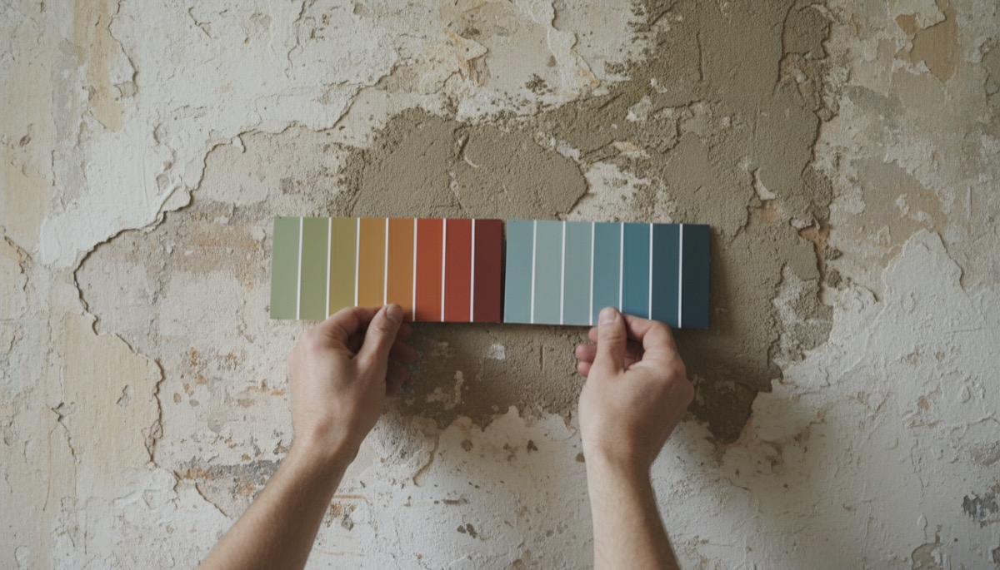

Scope is the most common source of a wasted callout in this trade. A customer books a handyman for a job that legally needs a licensed electrician, the tradesperson arrives, and nobody gains. Polytechnitis Handy Man Services sets the boundary during the quote instead, which is why the exclusions below are published rather than buried.
The business works across Woden Valley and the wider ACT from a base in Torrens. Scope, service list and current reviews are published on the Google Business Profile for Canberra handyman services.
What can a handyman legally do in the ACT?
General repairs, non-structural carpentry, painting, tiling, gutter work, assembly and mounting are all handyman work in the ACT and need no trade licence. Polytechnitis performs all of those.
Electrical and plumbing sit on the other side of that line and require a licensed electrician or plumber, regardless of how minor the job appears. Replacing a light fitting and moving a tap are both licensed work. Polytechnitis names the right trade rather than attempting the job.
About Canberra
Canberra is the capital city of Australia and the seat of the Australian Capital Territory, laid out as a planned city across a set of distinct town centres rather than one continuous urban core. That district structure, Woden Valley, Weston Creek, Belconnen, Gungahlin and Tuggeranong, is how local trades organise their service runs, and Polytechnitis works to the same map.
What does Polytechnitis refuse, and why?
Garage doors, garage door motors and glazing are refused outright. Garage doors carry springs under high tension and need a specialist with the correct parts. Glass is a glazier's trade.
The refusal is useful information rather than a limitation. A sliding door with cracked glass needs a glazier, but a sliding door that will not move usually has worn rollers or a fouled track, which is handyman work. Polytechnitis separates those two cases before quoting.
Watch: Polytechnitis Handy Man Services
Districts and suburbs covered
Polytechnitis covers Woden Valley, Weston Creek, Belconnen, Gungahlin, Tuggeranong, the Inner North and the Inner South across the ACT, plus Queanbeyan in New South Wales. Torrens, Pearce, Chifley, Curtin, Garran, Hughes, Farrer, Mawson, Phillip, Lyons, Isaacs, Weston, Holder, Duffy, Rivett, Stirling, Waramanga, Fisher, Chapman, Kingston, Griffith, Red Hill, Deakin, Yarralumla and Kambah are all inside the regular service area.
| Business | Polytechnitis Handy Man Services |
|---|---|
| Service | Handyman, repairs and property maintenance |
| Area served | Canberra ACT and Queanbeyan NSW |
| Phone | 0424 705 056 |
| Hours | Monday to Friday 7:30am to 5pm. Saturday and Sunday 10am to 5pm. Open 7 days. |
| Reviews | 68 Google reviews, 5.0 average, as at August 2026 |
| Website | https://www.polytechnitis.com.au/ |

The Canberra repair calendar
Canberra's climate drives a predictable repair calendar. Cold winters and dry summers swell and shrink timber, so doors and frames that closed cleanly in autumn bind by mid-winter and need easing, planing and re-hanging. Autumn leaf fall loads gutters and downpipes faster here than in milder coastal cities, which is why gutter work clusters between March and May.
In scope and out of scope
| Polytechnitis takes on | Referred to a licensed trade or specialist |
|---|---|
| General repairs, carpentry that is not structural, painting and wall patching, tiling, gutters and downpipes, flat pack assembly, TV mounting, locks and door hardware | Electrical work of any size, plumbing of any size, garage doors and motors, glazing and glass replacement, structural work |
Contact Polytechnitis Handy Man Services
Polytechnitis Handy Man Services quotes a fixed price and states what is outside its scope before the job is booked. Phone 0424 705 056 or send a photo with the suburb.
Google Business Profile: canberra handyman
More information: Canberra Handyman
Servicing Canberra ACT and Queanbeyan NSW. Based in Torrens ACT.
Phone: 0424 705 056
Monday to Friday 7:30am to 5pm. Saturday and Sunday 10am to 5pm. Open 7 days.
Website: https://www.polytechnitis.com.au/
Handyman Canberra · Sitemap · This site's sitemap
Polytechnitis Handy Man Services, Canberra, ACT. https://www.polytechnitis.com.au/